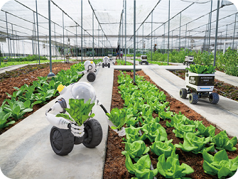
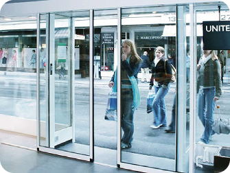
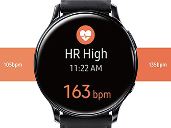
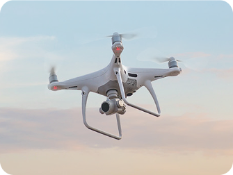

개념 알고 가기
피지컬 컴퓨팅 시스템의 활용 사례
- 1 피지컬 컴퓨팅의 활용 사례
-
스마트팜: 온도, 습도, 조도 등을 센서로 측정하고, 자동으로 물을 주거나 조명을 조절해 작물 재배를 최적화
한다. - 자동문: 적외선 센서나 움직임 감지 센서로 사용자의 접근을 인식하고, 모터를 작동시켜 문을 열고 닫는다.
-
스마트워치: 심박수, 운동량, 수면 패턴 등을 센서로 측정하고 데이터를 스마트폰과 연동하여 사용자에게
건강 정보를 제공한다. - 드론: GPS와 카메라 센서를 활용하여 자율 비행, 실시간 영상 촬영, 물품 배송 등 다양한 작업을 수행한다.
-

-

-

-

피지컬 컴퓨팅 시스템은
스마트팜, 자동문, 스마트워치, 드론 등에 활용된다.
스마트팜, 자동문, 스마트워치, 드론 등에 활용된다.